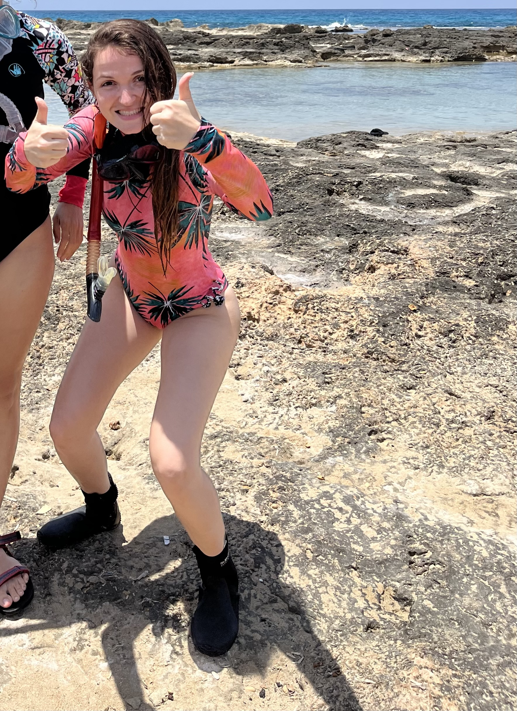
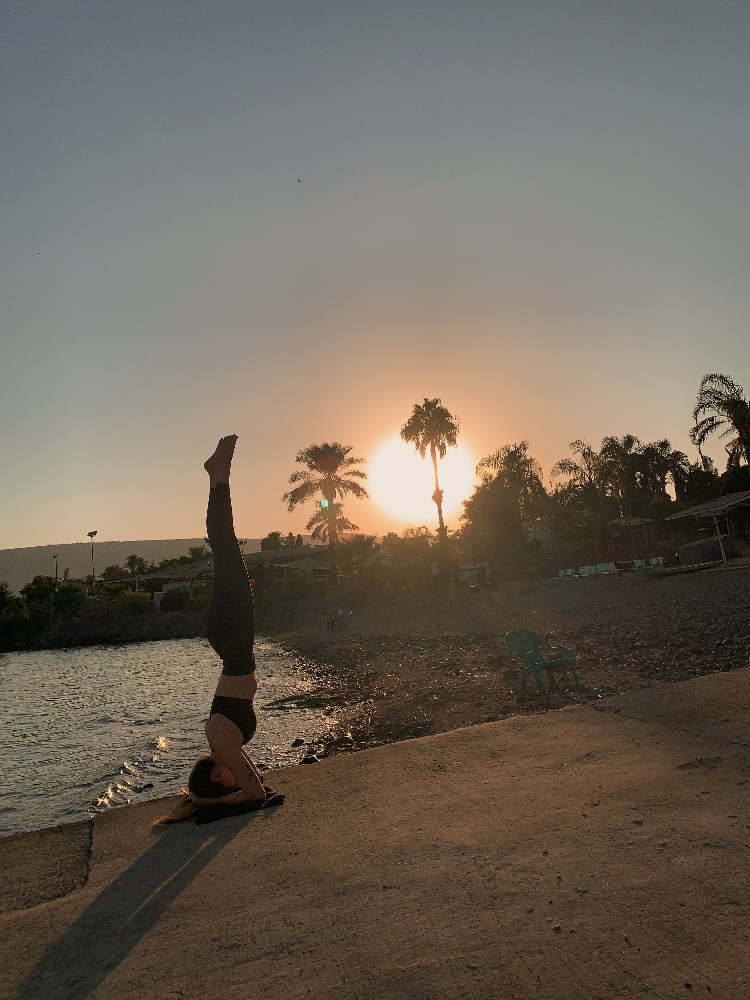

Roni's Page
My name is Roni, recently graduated from Tel Aviv university with a bachlor of science degree

During my degree I was a research assistant for a marin biology lab and got to dive to get the specements out
As a student I worked in an IVF clinic for a year as a lab and research assistent. The abstract for the research I worked on even won an award
Decided recently to go into the world of fullstack development and hopfully could work in the biotech indestry
something personal about me:
I enjoy going to the beach and practecing yoga
Excited to be here and to learn new things